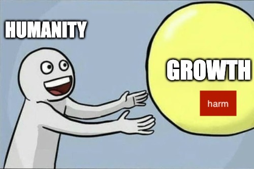
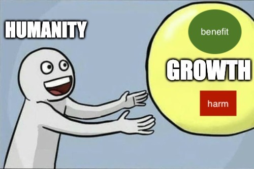

Why degrowth is harmful
Miklós Koren
A summary of the degrowth argument
- An ever-growing economy leads to ever-growing consumption of
resources and ever-growing pollution.
- Hitting planetary boundaries will lead to catastrophic
consequences.
- Therefore, we need to stop/slow economic growth, focus on well-being
instead.
Points of agreement
Need for radical changes
And you better start swimmin’
Or you’ll sink like a stone
For the times they are a-changin’
(The times they are a-changin’, Bob Dylan)
Markets cannot solve
everything
Decoupling is a tough
problem




Can we “decouple” economic growth from increasing harm?


A case of a global, catastrophic event
Covid response: - stay at home - wear a mask - get vaccinated